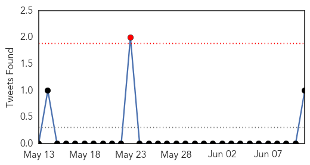
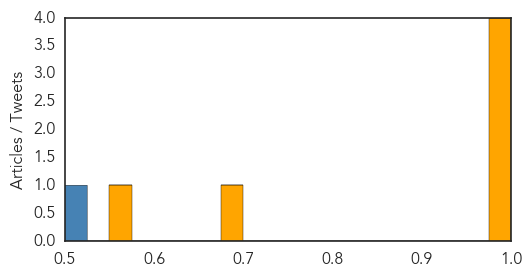

Cholera
30-Day Web Trend
18 alerts, 5 warnings

30-Day Twitter Trend
5 alerts, 0 warnings

Article Locations

Article Confidences

Top Articles:
- 0.989
- South Sudan reports nearly 1,500 cholera cases
- 0.831
- South Sudanese Refugees in Ethiopia: A Dire Situation, an Insufficient Response
- 0.812
- After six months of conflict, South Sudan faces a threat more dire than the violence itself - South Sudan
- 0.592
- Haiti's Chief Foreign Import: Meddling
- 0.552
- Cholera in Juba: "I Hope My Son Will Get Better"
Top Tweets:
-
No tweets found for Jun 11, 2014
MERS
30-Day Web Trend
0 alerts, 0 warnings

30-Day Twitter Trend
1 alerts, 0 warnings

Article Locations

Article Confidences
Top Articles:
- 0.999
- Two Cases Of MERS CoV Infection Reported In Iran
- 0.999
- Kuwait- Compound fights virus behind MERS
- 0.994
- Medical centres doing expat visa health testing in Saudi Arabia suspended
- 0.990
- WHO confirms MERS in Iran as Kuwait finds virus in camels
- 0.685
- More MERS, more problems
- 0.564
- Health facilities that fail to meet standards will lose licenses
Top Tweets:
- 0.704
- RT: Unanswered questions about the Middle East respiratory syndrome coronavirus (MERS-CoV) http://t.co/4KPV3lVUD2 bmcresearchnot…